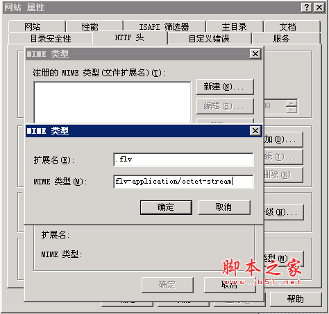

“虚拟主机都不支持Flv格式文件”的问题：比如你的Flv文件名称是1.flv,在虚拟主机上建一个名为“1.flv”的目录，在此目录下放你的Flv格式文件，将其改名为：index.htm,这样就行了，播放器中的文件名地址保持原样不动。
让IIS支持Flv的详细设置方法：
IIS-->网站--->属性--->HTTP性能--->MIME类型--->新建:
扩展名: .flv(注意flv前面有个.)
MIME类型:flv-application/octet-stream
如下图所示:

你必须设置一下内容
1：在“Web服务扩展”中Active Server Pages,Internet 数据连接器，RPC代理服务扩展，以及在服务器端的包含文件都必须置为允许状况
2：“网站”－》属性－》主目录－》配置－》选项－》启动父路径
3：“网站”－》属性－》服务－》在隔离模式中选中“以IIS5.0隔离模式运行WWW服务”
4：开始－》程序－》管理工具－》服务.找到RPC服务，双击－》登录－》允许服务与桌面交互
这样在windows2003下就可以运行asp的Server.CreateObject("WScript.Shell")
本来我是想用asp.net做这个程序，在asp.netzh中也是一直存在这个问题。所以该用asp
在asp可以实现功能了。我就没有在asp.net下做，诸位如果有兴趣可以试一试！
2:解决办法：
① 删除或更名以下危险的ASP组件：
Wscript.Shell、Wscript.Shell.1、Wscript.Network、Wscript.Network.1、adodb.stream、Shell.application
开始------->运行--------->Regedit，打开注册表编辑器，按Ctrl+F查找，依次输入以上Wscript.Shell等组件名称以及相应的ClassID，然后进行删除或者更改名称(这里建议大家更名，如果有部分网页ASP程序利用了上面的组件的话呢，只需在将写ASP代码的时候用我们更改后的组件名称即可正常使用。当然如果你确信你的ASP程序中没有用到以上组件，还是直
接删除心中踏实一些^_^,按常规一般来说是不会做到以上这些组件的。删除或更名后，iisreset重启IIS后即可升效。)
[注意：由于Adodb.Stream这个组件有很多网页中将用到，所以如果你的服务器是开虚拟主机的话，建议酢情处理。]
② 关于 File System Object (classid:0D43FE01-F093-11CF-8940-00A0C9054228)即常说的FSO的安全问题，如果您的服务器必需要用到FSO的话，(部分虚拟主机服务器一般需开FSO功能)可以参照本人的另一篇关于FSO安全解决办法的文章:Microsoft Windows 2000 Server FSO 安全隐患解决办法。如果您确信不要用到的话，可以直接反注册此组件即可。
③ 直接反注册、卸载这些危险组件的方法：(实用于不想用①及②类此类烦琐的方法)
卸载wscript.shell对象，在cmd下或直接运行：regsvr32 /u %windir%\system32\WSHom.Ocx
卸载FSO对象,在cmd下或直接运行：regsvr32.exe /u %windir%\system32\scrrun.dll
卸载stream对象,在cmd下或直接运行： regsvr32 /s /u "C:\Program Files\Common Files\System\ado\msado15.dll"
如果想恢复的话只需要去掉 /U 即可重新再注册以上相关ASP组件例如：regsvr32.exe %windir%\system32\scrrun.dll
④ 关于Webshell中利用set domainObject = GetObject("WinNT://.")来获取服务器的进程、服务以及用户等信息的防范，大家可以将服务中的Workstation[提供网络链结和通讯]即Lanmanworkstation服务停止并禁用即可。此处理后，Webshell显示进程处将为空白。
3 按照上1、2方法对ASP类危险组件进行处理后，用阿江的asp探针测试了一下,"服务器CPU详情"和"服务器操作系统"根本查不到,内容为空白的。再用海洋测试Wsript.Shell来运行cmd命令也是提示Active无法创建对像。大家就都可以再也不要为ASP木马危害到服务器系统的安全而担扰了。
当然服务器安全远远不至这些，这里为大家介绍的仅仅是本人在处理ASP木马、Webshell上的一些心得体会。在下一篇中将为大家介绍如何简简单单的防止别人在服务器上执行如net user之类的命令，防溢出类攻击得到cmdshell，以及执行添加用户、改NTFS设置权限到终端登录等等的最简单有效的防范方法。
400-660-7096
想让企业在互联网上做得更好的企业家的不二之选！
实战 专业 落地 高效